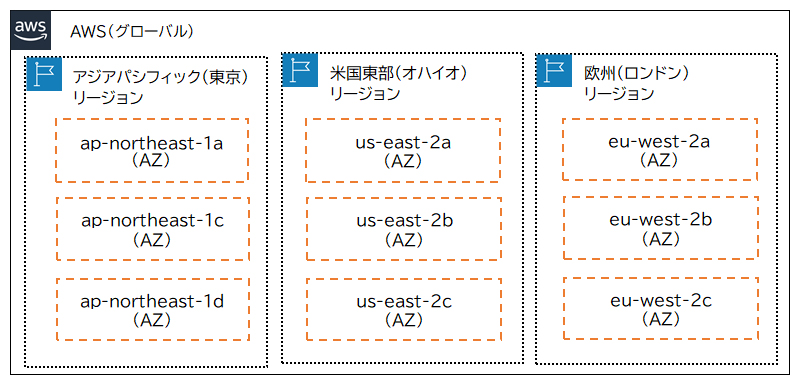
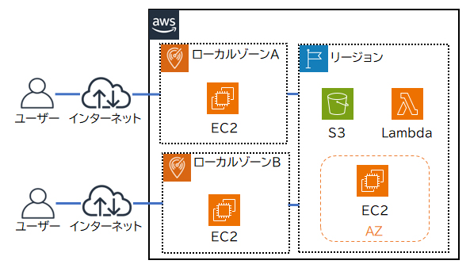
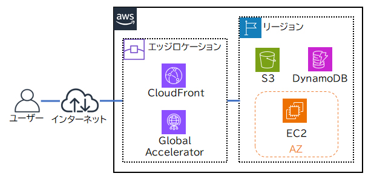

🌍 AWSグローバルインフラストラクチャ CLF
AWSは世界各地に物理インフラを配置し、高可用性・低レイテンシ・耐障害性を実現しています。 「リージョン」「アベイラビリティゾーン」「エッジロケーション」の3階層の構造は、CLF試験の基礎知識として必ず押さえましょう。
グローバルインフラの全体像

リージョン（Region）

🌏 リージョンとは
AWSのデータセンターが設置されている地理的な領域。東京・大阪・バージニア・シンガポールなど、世界中に30以上あります。
- 各リージョンは完全に独立（他リージョンの障害の影響を受けない）
- データを特定のリージョンに保持してコンプライアンス対応可能
- ユーザーに近いリージョンを選ぶと低レイテンシを実現
🏢 アベイラビリティゾーン（AZ）
1つのリージョン内にある複数の独立したデータセンター群。各リージョンに通常3〜6個のAZが存在します。
- AZ間は高速・低レイテンシの専用ネットワークで接続
- 物理的に離れた場所に配置（自然災害等への耐性）
- 複数AZにリソースを配置することで高可用性を実現
- 東京リージョン例：ap-northeast-1a / 1b / 1c / 1d
エッジロケーション（Edge Location）

エッジロケーションは、コンテンツをユーザーに最も近い場所からキャッシュ配信するための地点です。Amazon CloudFront（CDN）がエッジロケーションを使用します。リージョンより多く、世界中に400以上のエッジロケーションがあります。
エッジロケーションはリージョンとは異なる：エッジロケーションはキャッシュ・配信専用。EC2やRDSなどのサービスはリージョン内のAZで動作します。
ローカルゾーン（Local Zone）
AWS のコンピューティング、ストレージ、データベースなどのサービスを、主要都市に近い場所で提供する拡張インフラです。超低レイテンシが必要なゲーム・動画ストリーミング・機械学習推論などの用途に使用します。
インフラ階層の関係
graph TB
subgraph AWS["AWSグローバルインフラ"]
subgraph R1["🌏 東京リージョン（ap-northeast-1）"]
AZ1[AZ-1a\nデータセンター群]
AZ2[AZ-1b\nデータセンター群]
AZ3[AZ-1c\nデータセンター群]
AZ1 <-->|高速専用回線| AZ2
AZ2 <-->|高速専用回線| AZ3
end
subgraph R2["🌏 大阪リージョン（ap-northeast-3）"]
AZ4[AZ-3a]
AZ5[AZ-3b]
end
subgraph EDGE["📡 エッジロケーション"]
E1[東京 Edge]
E2[大阪 Edge]
E3[ソウル Edge]
E4[400+ 拠点]
end
end
User[👤 ユーザー] -->|最寄りエッジから\nコンテンツ受信| EDGE
EDGE -->|オリジンから\nキャッシュ取得| R1
style R1 fill:#003834,stroke:#008A81
style R2 fill:#003834,stroke:#008A81
style EDGE fill:#003834,stroke:#00B3A7
🔶 試験のポイント（CLF 必須）
- リージョン：地理的な領域（東京・バージニア等）、30以上
- AZ（アベイラビリティゾーン）：リージョン内の独立したデータセンター群（各リージョン3〜6個）
- エッジロケーション：CloudFrontのキャッシュ配信拠点（400以上、リージョンより多い）
- 「高可用性を確保するには複数のAZにリソースを分散する」— マルチAZ構成
- 「リージョン間の障害は相互に影響しない」— リージョン分離の原則
- エッジロケーション = CloudFront（CDN）が使う。EC2やRDSには使用しない
- ローカルゾーン：超低レイテンシ用途の都市近傍拠点（SAA向け）